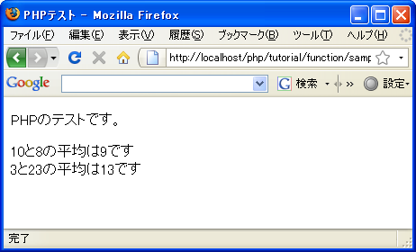

引数を使って関数に値を渡す
関数における引数の使い方を確認いたします。まずはどのような場合に引数を使うのかを確認します。
print 'こんにちは。高橋さん。'; print 'お元気ですか？'; // 他の処理 print 'こんにちは。大野さん。'; print 'お元気ですか？';
上記の中で同じような処理が2回出てきています。ほぼ同じなのですが一箇所だけでも異なれば関数としてまとめることはできません。この例では「お元気ですか？」の部分だけしか関数にできません。
function greeting(){
print 'お元気ですか？';
}
print 'こんにちは。高橋さん。';
greeting();
// 他の処理
print 'こんにちは。大野さん。';
greeting();
こんな時に、関数を呼び出すたびに一部の値を変化させ、そして関数呼び出し側で指定できると便利です。今回の場合で言えば名前の値を関数呼び出し時に指定することが出来ればより広範囲の処理を関数としてまとめることが可能になります。
関数を呼び出す時に関数に渡す値を引数といいます。引数を使って先ほどのサンプルを書き直すと次のようになります。
function greeting($name){
print 'こんにちは。'.$name.'さん。';
print 'お元気ですか？';
}
greeting('高橋');
// 他の処理
greeting('大野');
呼び出し側では関数に渡したい値を「関数名(値)」のように「(」から「)」の中に記述しています。関数側では渡されてくる値を格納する変数を同じように「(」から「)」の間に記述します。書式は次の通りです。
function 関数名(変数名){
// ...
}
関数名(値);
この例では最初に関数を呼び出す時に値として「高橋」を関数に渡しています。関数側では変数「name」に「高橋」という値が格納された上で関数内の処理が実行されます。2回目に呼び出す時には値として「大野」を関数に渡しています。関数側では今度は変数「name」に「大野」という値が格納された上で関数内の処理が実行されることになります。
引数を使うことで関数を呼び出すたびに値を指定して実行させることが可能になります。
複数の引数
引数は1つだけではなく必要な数だけ指定することが出来ます。複数の引数を指定する場合はカンマ(,)で区切り続けて記述して下さい。書式は次の通りです。
function 関数名(変数名1, 変数名2, ...){
// ...
}
関数名(値1, 値2, ...);
呼び出し側で指定した順に変数に値を格納していきます。値1へ変数1に値2は変数に2に格納された上で関数内の処理が実行されます。
例えば2つの値を指定し平均の値を出力するような関数は次のように記述できます。
function heikin($num1, $num2){
$result = ($num1 + $num2) / 2;
print '平均は'.$result.'です';
}
heikin(10, 8);
heikin(3, 23);
この例では最初の関数呼び出して10と8の平均を計算して出力します。そして次の関数呼び出しでは3と23の平均を計算して出力します。
サンプルプログラム
では簡単なプログラムで試して見ます。
<!DOCTYPE html PUBLIC "-//W3C//DTD XHTML 1.0 Transitional//EN"
"http://www.w3.org/TR/xhtml1/DTD/xhtml1-transitional.dtd">
<html xmlns="http://www.w3.org/1999/xhtml" xml:lang="ja" lang="ja">
<head>
<meta http-equiv="Content-Type" content="text/html;charset=UTF-8" />
<title>PHPテスト</title>
</head>
<body>
<p>PHPのテストです。</p>
<p>
<?php
function heikin($num1, $num2){
$result = ($num1 + $num2) / 2;
print $num1.'と'.$num2.'の平均は'.$result.'です<br />';
}
heikin(10, 8);
heikin(3, 23);
?>
</p>
</body>
</html>
上記のファイルをWWWサーバのドキュメントルート以下に設置しブラウザからアクセスすると次のように表示されます。

( Written by Tatsuo Ikura )

著者 / TATSUO IKURA
初心者～中級者の方を対象としたプログラミング方法や開発環境の構築の解説を行うサイトの運営を行っています。